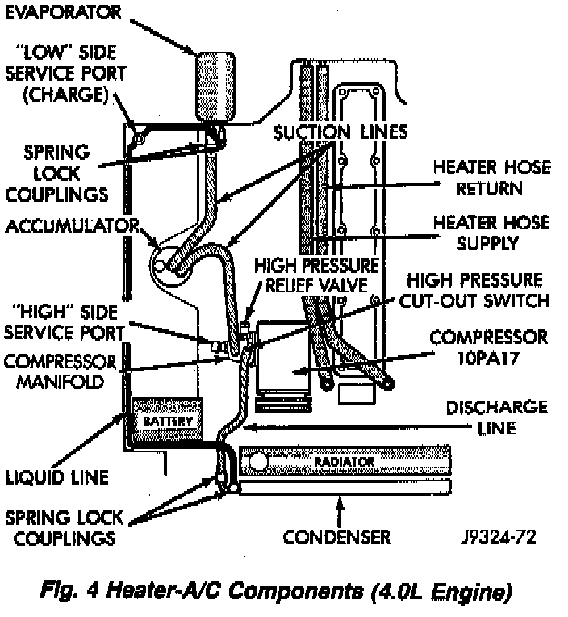
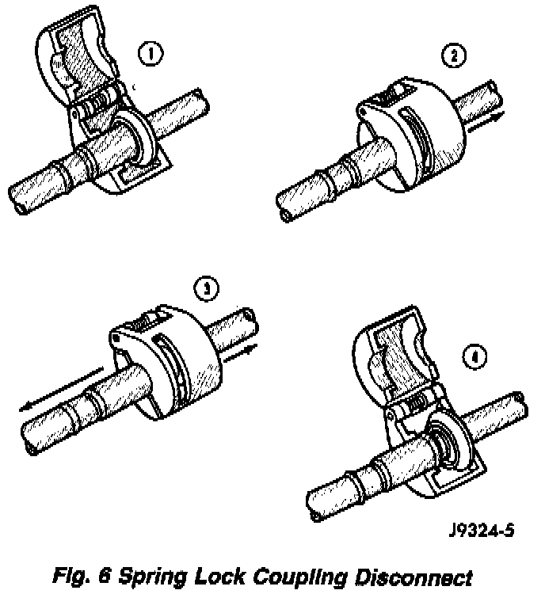

Spring-Lock Quick-Disconnect Couplings
Fig.4 Heater-A/C Components (4.0L Engines):

Fig.6 Spring Lock Coupling Disconnect:

The spring lock coupling is a refrigerant line coupling held together by a garter spring inside a circular cage. When the coupling is connected together, the flared end of the female fitting slips behind the garter spring inside the cage of the male fitting. The garter spring and cage prevent the flared end of the female fitting from pulling out of the cage.
Two 0-rings are used to seal between the two halves of the coupling. These 0-rings are made of special material that are compatible with R-134a refrigerant and must be replaced with an 0-ring made of the same material. The 0-rings normally used in refrigerant system connections are not the same material and should not be used with the spring lock coupling. Use only the 0-rings listed in the parts book for the spring lock coupling.
A plastic indicator ring is used on spring lock couplings to indicate, during vehicle assembly, that the coupling is connected. Once the coupling is connected, the indicator ring is no longer necessary but will remain captive by the coupling near the cage opening.
The indicator ring may also be used during service operations to indicate connection of the coupling. After the coupling has been cleaned, new 0-rings installed and lubricated with clean refrigerant oil, insert the tabs of the indicator ring into the cage opening. Connect the coupling together by pushing with a slight twisting motion. When the coupling is connected, the indicator ring will snap out of the cage opening. It will also remain captured on the coupling by the refrigerant line.